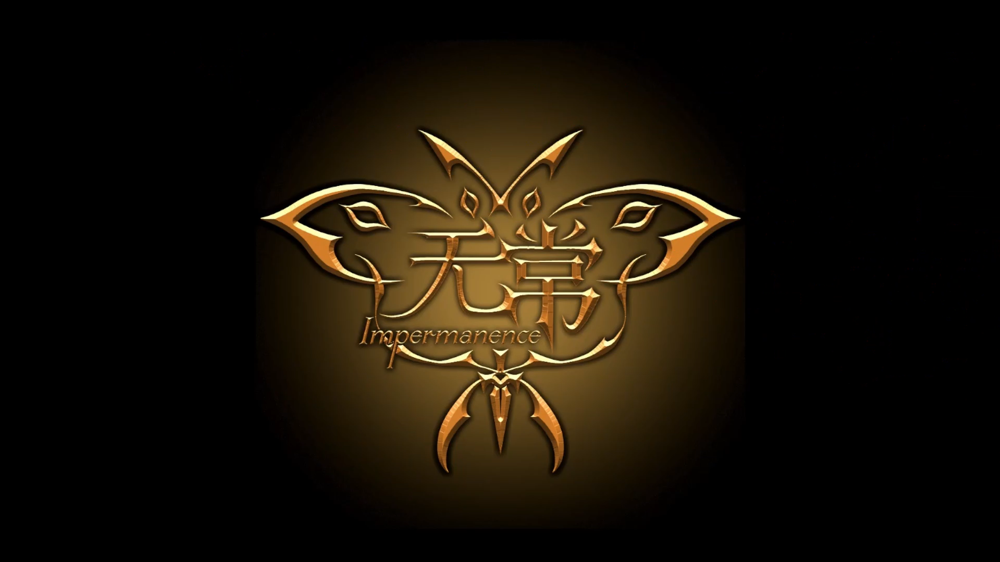
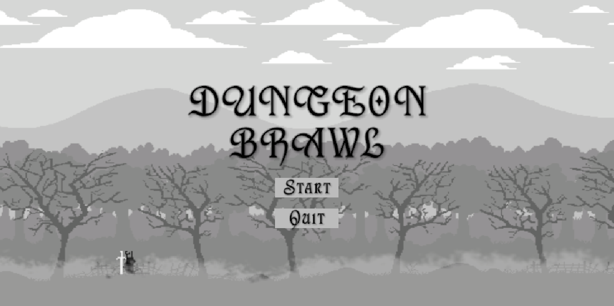
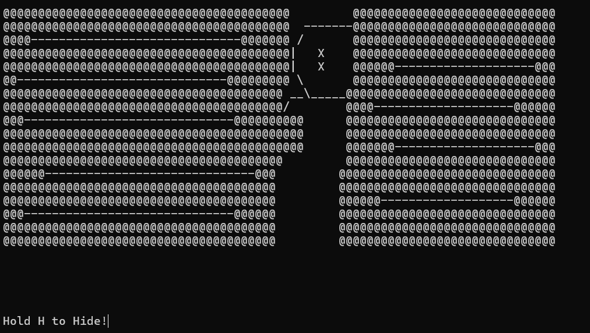

Here are some of the old projects I've made during my time in NYP

This project was done in our Work Integrated Unit in year 2 of NYP, where we worked with a team of artists
it was a project with the goal of making a boss fight with various attacks and phases, offering a difficult yet rewarding experience. we had some trouble working together at the start as we had to get accustomed to each other's methods of working, as well as figure out how to bridge the two programs we were using, unity and blender.
this project was a culmination of every skill and program we've learnt, to attempt to make a coherent working game that could potentially be commericialised.
Video for Impermanence

This was a 2d soulsllike action platformer I made for a project assignment in school
this was the project where I tried making a simple 2-level dungeon layout, with a boss at the end. I had some trouble with the enemy AI and especially the boss since this was the first time i really went in depth into enemy FSMs and "smart" behaviours. I wanted the boss to be a smart one rather than an entity with set attacks to cycle through so i spent a long time struggling to figure out how to get it done properly.
this project was the first time i used A* pathfinding, mixing it with a more complex version of the simple FSMs that i had learnt before.
Video for Dungeon Brawl
This very website! Made for your viewing pleasure
It was a project that was done under quite a time crunch, even though I had a template from an old assignment I could reference. It was a bit challenging as I had to fully refresh my memory on how to code out a website but once I was familiar with it again, there was no issue.
this project was made to refresh my mind on the basics and concepts of HTML, CSS and Javascript, to ensure i retained my abilities to code out a website of my own.

A project made with some friends for a project back when we were first learning how to code.
this was a project done in NYP for our first ever WIU, we worked within the compiler itself to make a game and it turned out alright. we ran into some trouble regarding the pathways for the "choose your own path" parts at the start sicne we were still only just starting out but it ended up working in the end.
this project was made with the help of an ascii art canvas of sorts, allowing me to visualise how it would look before shipping it over to the compiler to be included in the WIU itself.
Video for In/Sanity